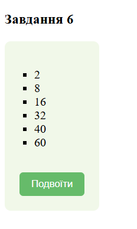

Опис бізнес-логіки предметної галузі
Тема: Веб-сайт магазину дитячих меблів
«CozyNest».
Мета проeкту: Веб-сайт призначений для надання
батькам зручної платформи, яка спрощує вибір, порівняння та
придбання меблів, адаптованих до потреб дітей різного віку.
Забезпечує користувачів інструментами для персоналізованого пошуку
та надає поради щодо створення безпечного і комфортного простору
для дитини.
Сценарій використання:
- Користувач заходить на сайт та потрапляє на головну сторінку.
- Користувач користується пошуковим рядком або переходить до каталогу.
- Користувач обирає категорію товарів (ліжечка, стільці, шафи тощо).
- Користувач застосовує фільтри для звуження вибору за параметрами (матеріал, розміри, вік, ціна).
- Користувач відкриває сторінки товарів, переглядає фото, характеристики та відгуки.
- Користувач додає товари до «Списку бажань» для їх збереження і подальшого порівняння.
- Користувач обирає товар і додає його до кошика.
- Користувач заповнює дані для доставки та вибирає зручний спосіб оплати.
- Користувач отримує підтвердження замовлення на електрону пошту.
- Користувач заходить у розділ «Мої замовлення» та відслідковує статус доставки замовлення.
- Користувач після отримання товару заходить у розділ «Мої замовлення» і залишає відгук.
- Користувач заповнює форму зворотного зв’язку, щоб отримати консультацію, задати питання про товар або уточнити деталі доставки.
Тема: СТРУКТУРА HTML-ДОКУМЕНТА. ВИБІР ПРЕДМЕТНОЇ ГАЛУЗІ. РОБОТА З ПОСИЛАННЯМИ, ТАБЛИЦЯМИ, ЗОБРАЖЕННЯМИ, СПИСКАМИ в HTML-ДОКУМЕНТІ.
Мета: придбати практичні навички роботи з HTML-документом, таблицями, , зображеннями, посиланнями, списками, формами Створити шаблон звітного HTML-документом для відображення результатів роботи всіх лабораторних робіт.
Посилання на репозиторій власного WEB-застосункуПосилання на живу сторінку власного WEB-застосунку
Посилання на репозиторій звітного HTML-документа
Посилання на живу сторінку звітного HTML-документа
Посилання на репозиторій з самостійними роботами
Посилання на живу сторінку з самостійними роботами
СТРУКТУРА ДОКУМЕНТА
<!DOCTYPE html>
<html lang="uk">
<head>
<meta charset="UTF-8">
<meta http-equiv="X-UA-Compatible" content="IE=edge">
<meta name="viewport" content="width=device-width, initial-scale=1.0">
<title>CozyNest - Дитячі меблі</title>
<link rel="stylesheet" href="https://cdnjs.cloudflare.com/ajax/libs/font-awesome/5.15.3/css/all.min.css">
<link rel="stylesheet" href="style_app.css">
</head>
<body>
<header>
<section class="flex">
<input type="checkbox" name="" id="toggler">
<label for="toggler" class="fas fa-bars"></label>
<a href="#" class="logo">CozyNest</a>
<nav class="navbar">
<a href="#home">Головна</a>
<a href="#products">Каталог</a>
<a href="#home">Про нас</a>
<a href="#contact">Контакти</a>
</nav>
<div class="icons">
<a href="#" class="fa fa-search"></a>
<a href="#" class="fas fa-heart"></a>
<a href="#" class="fas fa-user-circle"></a>
<a href="#" class="fa fa-shopping-basket"></a>
</div>
</section>
</header>
<main>
<!-- Головна сторінка -->
<div class="home-container">
<section class="home" id="home">
<div class="content">
<h3>CozyNest</h3>
<span> місце де затишок зустрічається з турботою </span>
<p>Наші меблі створені, щоб стати основою для найцінніших сімейних моментів.</p>
<a href="#products" class="btn">Обрати меблі</a>
</div>
</section>
</div>
<!-- Секція іконок -->
<div class="icons-container">
<section class="box-container">
<div class="box">
<img src="images/icon-1.png" alt="">
<div class="info">
<h3>Безкоштовна доставка</h3>
</div>
</div>
<div class="box">
<img src="images/icon-2.png" alt="">
<div class="info">
<h3>3 роки гарантії</h3>
</div>
</div>
<div class="box">
<img src="images/icon-3.png" alt="">
<div class="info">
<h3>Екологічні матеріали</h3>
</div>
</div>
<div class="box">
<img src="images/icon-4.png" alt="">
<div class="info">
<h3>Власне виробництво</h3>
</div>
</div>
</section>
</div>
<!-- Каталог товарів -->
<section class="products" id="products">
<h1 class="heading">Каталог</h1>
<div class="box-container">
<div class="box">
<div class="image">
<img src="images/img-1.jpg" alt="">
</div>
<div class="content">
<h3>Ліжко односпальне Wood Original</h3>
<div class="price"> 12 500 ₴ </div>
</div>
</div>
<div class="box">
<div class="image">
<img src="images/img-2.jpg" alt="">
</div>
<div class="content">
<h3>Ліжко-лофт Wood Exclusive</h3>
<div class="price"> 14 000 ₴</div>
</div>
</div>
<div class="box">
<div class="image">
<img src="images/img-3.jpg" alt="">
</div>
<div class="content">
<h3>Ліжко-горище Wood Original</h3>
<div class="price"> 15 800 ₴ </div>
</div>
</div>
<div class="box">
<div class="image">
<img src="images/img-4.jpg" alt="">
</div>
<div class="content">
<h3>Ліжко-лофт Wood Exclusive</h3>
<div class="price"> 14 000 ₴</div>
</div>
</div>
<div class="box">
<div class="image">
<img src="images/img-5.jpg" alt="">
</div>
<div class="content">
<h3>Двоярусне ліжко Wood Original</h3>
<div class="price"> 17 300 ₴</div>
</div>
</div>
<div class="box">
<div class="image">
<img src="images/img-6.jpg" alt="">
</div>
<div class="content">
<h3>Ліжечко дитяче Wood Mini+</h3>
<div class="price"> 15 000 ₴</div>
</div>
</div>
</div>
</section>
<!-- Форма зворотнього зв'язку -->
<div class="contact" id="contact">
<h1 class="heading"> Контакти </h1>
<div class="row">
<form action="">
<input type="text" placeholder="Імя" class="box">
<input type="email" placeholder="Електрона пошта" class="box">
<input type="number" placeholder="Номер телефону" class="box">
<textarea name="" class="box" placeholder="Повідомлення" id="" cols="30" rows="10"></textarea>
<input type="submit" value="Надіслати" class="btn">
</form>
</div>
</div>
</main>
<!-- Контакти -->
<section class="footer">
<div class="box-container">
<div class="box">
<h3>Меню</h3>
<ul>
<li><a href="#">Головна</a></li>
<li><a href="#">Каталог</a></li>
<li><a href="#">Про нас</a></li>
<li><a href="#">Контакти</a></li>
</ul>
</div>
<div class="box">
<h3>Покупцю</h3>
<a href="#">Оплата і доставка</a>
<a href="#">Гарантія</a>
<a href="#">Повернення</a>
<a href="#">Карта сайту</a>
</div>
<div class="box">
<h3>Адреса</h3>
<h4>Шоурум</h4>
<h5>м. Київ, Велика Житомирська, 7</h5>
<h4>Графік роботи</h4>
<h5>10:00 – 20:00 без вихідних</h5>
</div>
<div class="box">
<h3>Слідкуйте за нами</h3>
<div class="links">
<a href="#"><img src="images/tg-icon.png" alt="Telegram"></a>
<a href="#"><img src="images/inst-icon.png" alt="Instagram"></a>
<a href="#"><img src="images/fb-icon.png" alt="Facebook"></a>
<a href="#"><img src="images/youtube-icon.png" alt="YouTube"></a>
</div>
</div>
</div>
</section>
</body>
</html>
Таблиці в HTML використовуються для організації даних у
структурованому вигляді за допомогою рядків і стовпців.
Вони створюються за допомогою тега <table> та супутніх
тегів, які визначають елементи таблиці.
Основні теги для створення таблиць:
- <table> - основний тег для створення таблиці. Він є контейнером для всіх інших елементів таблиці.
- <tr> (table row) - використовується для визначення рядка таблиці.
- <th> (table header) - визначає заголовок стовпця або рядка. Текст у <th> за замовчуванням жирний і вирівняний по центру.
- <td> (table data) - використовується для визначення комірок із даними в таблиці.
- <caption> - додає заголовок таблиці (розташований зверху таблиці).
- <thead> - шапка таблиці
- <tbody> - тіло таблиці
- <tfoot> - нижній колонтитул таблиці
- <col> - параметри стовпчиків
- <colgroup> - параметри груп стовпчиків
<table>
<tr>
<td>Комірка 1</td>
<td>Комірка 2</td>
<td>Комірка 3</td>
</tr>
<tr>
<td>Комірка 4</td>
<td>Комірка 5</td>
<td>Комірка 6</td>
</tr>
</table>

HTML зображення додаються за допомогою тега <img>, який
дозволяє вставляти графічні файли на веб-сторінки.
Це важливий елемент для створення візуального контенту, що робить
сайт більш привабливим та інформативним.
Зображення можна вставляти у різні частини сторінки, наприклад, у
блоки <div>, списки або таблиці.
Основні характеристики зображень в HTML:
Тег <img>:
- Використовується для вставки зображення.
- Самозакриваючий (немає закриваючого тега </img>).
- Обов'язково повинен містити атрибут src для вказання джерела зображення.
- src (source): Вказує шлях до файлу зображення (відносний або абсолютний).
- alt (alternative): Описує зображення, якщо воно не відображається, і покращує доступність.
- title: Додає спливаючу підказку при наведенні курсора на зображення.
- width і height: Встановлюють розміри зображення у пікселях або відсотках. Якщо вказати лише один із атрибутів width або height, другий визначиться автоматично, зберігаючи пропорції.
Реалізація

HTML Списки дозволяють веб-розробникам групувати набір
пов’язаних елементів в списках.
Існує два основних типи списків:
- нумерований (впорядкований) список - <ol> - кожен елемент списку <li> відмічається цифрою. Браузер нумерує елементи по порядку автоматично і якщо видалити один або кілька елементів такого списку, інші номери будуть автоматично перераховані.
- маркований (невпорядкований) список - <ul> - кожен елемент списку <li> відмічається маркером. Як маркер елемента списку виступає мітка, наприклад, зафарбований кружок.
Кожен список є контейнером, всередині якого розташовуються елементи списку або пари термін-визначення. Елементи списку поводяться як блокові елементи, розташовуючись один під одним і займаючи всю ширину блоку-контейнеру.
Приклад маркованого списку:
<ul>
<li>Microsoft</li>
<li>Google</li>
<li>Apple</li>
<li>IBM</li>
</ul>
Приклад нумерованого списку:
<ol>
<li>Microsoft</li>
<li>Google</li>
<li>Apple</li>
<li>IBM</li>
</ol>
Реалізація


Висновки
У результаті виконання лабораторної роботи було розроблено HTML-документ, який містить основні елементи структури веб-сторінки: таблиці, зображення, списки та посилання. Застосування цих елементів дозволяє створювати зручні й інформативні веб-сторінки для представлення різноманітного контенту. Отримані практичні навички роботи з HTML сприяють кращому розумінню принципів побудови веб-документів. Це включає створення логічної структури, застосування семантичних тегів і коректного форматування даних.Розроблений шаблон HTML-документа може бути використаний для представлення результатів лабораторних робіт, що забезпечить чітке й упорядковане відображення інформації для подальшого аналізу та навчання.
Тема: КАСКАДНІ ТАБЛИЦІ СТИЛІВ. СЕЛЕКТОРИ. ІДЕНТИФІКАТОРИ. СТИЛЬОВЕ ОФОРМЛЕННЯ ТЕКСТОВИХ ЕЛЕМЕНТІВ В HTML-ДОКУМЕНТАХ.
Мета: придбати практичні навички роботи з селекторами: тегів, класів, ідентифікаторів; списками, різноманітними властивостями кольору і фону, оформленням текстових елементів.
Посилання на репозиторій власного WEB-застосункуПосилання на живу сторінку власного WEB-застосунку
Посилання на репозиторій звітного HTML-документа
Посилання на живу сторінку звітного HTML-документа
Посилання на репозиторій з самостійними роботами
Посилання на живу сторінку з самостійними роботами
Основні методи підключення стилів у веб-розробці:
1. Inline-стилі (вбудовані)
Стилі додаються безпосередньо до HTML-елемента за допомогою
атрибуту style. Використовуються для швидких правок
або індивідуальних стилів, які не потребують повторного
використання. Однак, їх важко підтримувати у великих проєктах
через розкиданість стилів по HTML-коду.
<p style="color: blue; font-size: 16px;">Текст синього кольору</p>2. Внутрішні стилі (Embedded styles)
CSS-код розміщується у секції <style> всередині HTML-документа, зазвичай у <head>.Зручно для стилізації невеликих сторінок або тестування стилів без створення окремого файлу. Але при збільшенні кількості правил код HTML може стати важко читабельним.
<style>
p {color: green;}
</style>
<p>Цей текст зелений</p>3. Імпорт стилів через @import
Використовується директива @import у CSS для підключення інших
CSS-файлів. Зручно для організації каскадності стилів та
підключення бібліотек. Проте цей метод менш ефективний у
порівнянні з <link> через можливі затримки
завантаження стилів.
@import url('styles.css');4. Зовнішні стилі (External Styles)
CSS-код розміщується у окремому файлі з розширенням .css, який
підключається до HTML-документа за допомогою тегу
<link> у <head>.
Використовується для відокремлення структури HTML від стилів, що
покращує організацію коду та повторне використання. Це найкращий
підхід для великих проєктів, але вимагає завантаження додаткового
файлу, що може вплинути на швидкість завантаження сторінки.
<link rel="stylesheet" href="styles.css">Використання селекторів у CSS
Селектори в CSS дозволяють стилізувати конкретні елементи на сторінці. Основними є селектори за тегом, класом, ідентифікатором, атрибутом і комбіновані.
Селектор за класом
Вибирає всі елементи, що мають певний клас, задається через крапку (.). Дозволяє групувати кілька елементів для однакового стилю без змін у структурі HTML. Можна застосовувати до кількох елементів одночасно, додаючи один клас до різних тегів. Є гнучкішим за селектор тегу, оскільки можна використовувати його вибірково.
.button {
background-color: green;
color: white;
padding: 10px 20px;
border-radius: 5px;
}Селектор за ідентифікатором (ID)
Вибирає лише один унікальний елемент за його id, задається через #. Використовується для стилізації окремих елементів, які не повторюються на сторінці. Не рекомендується застосовувати для глобальних стилів, оскільки ID не можна повторювати. Краще використовувати класи, якщо потрібно стилізувати кілька однакових елементів.
#main-title {
font-size: 24px;
text-align: center;
font-weight: bold;
}Селектор за тегом
Вибирає всі елементи певного тегу, наприклад,
<p> або <h1>.
Застосовується, коли потрібно стилізувати всі елементи одного типу
без додаткових класів чи ідентифікаторів. Такий підхід зручний для
загальних стилів, але не дає гнучкості в налаштуванні окремих
елементів. Варто бути обережним, щоб не змінити стиль усіх
елементів цього типу на сторінці.
p {
font-size: 18px;
color: blue;
line-height: 1.5;
}Селектор за атрибутом
Дозволяє застосовувати стилі до елементів, які містять певний атрибут. Корисний для вибору форм, посилань та інших елементів, які мають специфічні властивості. Можна задавати стилі для елементів з певним значенням атрибута або його частковою відповідністю. Використовується рідше, але дає можливість створювати динамічні стилі без додаткових класів чи ID.
input[type="text"] {
border: 2px solid blue;
padding: 5px;
font-size: 16px;
}Комбіновані селектори
Дозволяють поєднувати кілька умов для вибору елементів. Можуть бути використані для уточнення стилів і створення ієрархічних правил. Допомагають стилізувати елементи залежно від їхнього розташування на сторінці. Можуть включати нащадкові, дочірні (>), сусідні (+) і загальні (~) селектори.
div p {
color: red;
font-size: 14px;
}
h1 + p {
font-weight: bold;
}
ul > li {
list-style-type: square;
}
Селектор тегу:
В цьому прикладі був застосований селектор тегу (header), щоб стилізувати верхню частину сторінки.
Цей підхід дозволяє одразу застосувати стилі до всіх елементів <header>, гарантуючи їхню фіксацію у верхній частині екрану та візуальну помітність.
Використання селектора тегу є простим і ефективним, оскільки <header> зазвичай присутній на сторінці в одному екземплярі.
HTML-код
<header>
<section class="flex">
<input type="checkbox" name="" id="toggler">
<label for="toggler" class="fas fa-bars"></label>
<a href="#" class="logo">CozyNest</a>
<nav class="navbar">
<a href="#home">Головна</a>
<a href="#products">Каталог</a>
<a href="#home">Про нас</a>
<a href="#contact">Контакти</a>
</nav>
<div class="icons">
<a href="#" class="fa fa-search"></a>
<a href="#" class="fas fa-heart"></a>
<a href="#" class="fas fa-user-circle"></a>
<a href="#" class="fa fa-shopping-basket"></a>
</div>
</section>
</header>
CSS-код
header {
position: fixed;
top: 0;
left: 0;
right: 0;
background: #fff;
z-index: 1000;
box-shadow: 0 .5rem 1rem rgba(0, 0, 0, .1);
}
Відображення в браузері
Селектор класу:
В цьому прикладі був застосований селектор класу (header .icons
a), щоб стилізувати посилання <a> всередині
елементів з класом .icons, які знаходяться в межах
<header>.
Даний селектор дозволяє точно вибрати потрібні елементи та застосувати до них стилі, такі як розмір шрифту, колір тексту та відступи.
Використання класу .icons забезпечує гнучкість, оскільки цей клас можна застосувати до інших блоків іконок на сторінці, якщо це необхідно, без необхідності дублювати CSS-код. Це робить стилізацію більш організованою, легкою для підтримки та масштабування.
HTML-код
<div class="icons">
<a href="#" class="fa fa-search"></a>
<a href="#" class="fas fa-heart"></a>
<a href="#" class="fas fa-user-circle"></a>
<a href="#" class="fa fa-shopping-basket"></a>
</div>
CSS-код
header .icons a {
font-size: 2.5rem;
color: #666;
margin-left: 1.5rem;
}
header .icons a:hover {
color: #0e0d0d;
}
Відображення в браузері
Селектор ідентифікатор:
В цьому прикладі був застосований селектор ідентифікатор (#btn), щоб стилізувати кнопку з ідентифікатором btn.
Цей підхід дозволяє зосередитися на стилізації конкретного елемента, який є унікальним на сторінці.
Використання ідентифікатора забезпечує високу специфічність, що гарантує, що стилі застосовуються саме до цієї кнопки, не впливаючи на інші елементи.
HTML-код
<div class="content">
<h3>CozyNest</h3>
<span> місце де затишок зустрічається з турботою </span>
<p>Наші меблі створені, щоб стати основою для найцінніших сімейних моментів.</p>
<a href="#products" id="btn">Обрати меблі</a>
</div>
CSS-код
#btn {
display: inline-block;
margin-top: 1rem;
border-radius: 5rem;
background: #333;
color: #fff;
padding: 1rem 3rem;
cursor: pointer;
font-size: 1.8rem;
}
#btn:hover {
background: #666;
}
Відображення в браузері
Інші селектори
У цьому прикладі були застосовані різні типи CSS-селекторів, такі як сусідні, дочірні селектори, селектор атрибута та універсальний селектор.
1. Селектор атрибута
Селектор атрибута дозволяє вибирати елементи за значенням їх атрибута.
input[type="email"] {
border-color: #3498db;
}
У цьому прикладі використаний селектор атрибута для вибору всіх
елементів <input> з атрибутом
type="email" і встановлено для них синій колір рамки.
2. Дочірні селектори
Дочірні селектори дозволяють вибирати елементи, які є прямими нащадками іншого елемента.
.service-grid > .service-item {
border: 1px solid #ccc;
padding: 10px;
}
У цьому прикладі всі елементи з класом .service-item,
які є прямими нащадками елемента з класом
.service-grid, отримають обведення та відступи.
3. Сусідні селектори
Сусідні селектори дозволяють вибирати елементи, які йдуть безпосередньо після іншого елемента.
.service-item + .service-item {
margin-left: 20px;
}
У цьому прикладі кожен елемент з класом
.service-item отримає лівий відступ, якщо перед ним є
інший елемент з таким самим класом.
4. Універсальний селектор
Універсальний селектор вибирає всі елементи на сторінці.
* {
box-sizing: border-box;
margin: 0;
padding: 0;
}
Цей універсальний селектор скидає відступи і додає
box-sizing: border-box; до всіх елементів на
сторінці, що допомагає в керуванні розмірами елементів.
Шрифти Google Fonts
Виконано підключення шрифта Bad Script із застосуванням Google Fonts.
Застосування шрифта Bad Script для основного тексту на веб-сторінці:
CSS: Шрифти Текст Таблиці Фон Контур Списки CSS Просунутий
У цьому розділі метою є ознайомитись з різними техніками стилізації тексту, таблиць, списків та фонів за допомогою каскадних таблиць стилів (CSS).
1. Шрифти
Для стилізації тексту на сайті було використвно шрифт Bad Spirit з Google Fonts, а також стильове оформлення для заголовків і абзаців.
<link rel="stylesheet" href="https://fonts.googleapis.com/css?family=Trirong">
* {
margin: 0;
padding: 0;
box-sizing: border-box;
font-family: "Bad Script", serif;
outline: none;
border: none;
text-decoration: none;
transition: .2s linear;
}
2. Фон
Фон для елементів може бути однотонним або градієнтним. Ось приклад градієнтного фону для секцій:
.btn:hover {
background: #666;
}
3. Контури
Контури додаються до елементів за допомогою властивості
text-shadow для тексту і box-shadow для
контейнерів.
h1 {
text-shadow: 2px 2px 5px rgba(0, 0, 0, 0.3);
}
.content-section {
box-shadow: 0 4px 10px rgba(0, 0, 0, 0.1);
}
4. Колір тексту
Для зміни кольору тексту використовуються властивості
color та background-color. Приклади:
.text-container {
background-color: rgba(196, 242, 98, 0.096);
padding: 20px;
border-radius: 5px;
margin: 0;
width: 100%;
box-sizing: border-box;
}
5. Багаторівневі списки
Для багаторівневих списків можна застосовувати відступи та
зміщення за допомогою властивості
padding
та margin.
ul {
list-style-type: none;
}
li {
margin: 5px 0;
}
li ul {
margin-left: 20px;
}
6. CSS-властивості для таблиць
Таблиці можна стилізувати за допомогою CSS, додаючи контури, відступи та змінюючи кольори фону.
table {
width: 100%;
border-collapse: collapse;
}
th, td {
border: 1px solid #ccc;
padding: 10px;
text-align: left;
}
th {
background-color: #3498db;
color: white;
}
td {
background-color: #ecf0f1;
}
CSS Просунутий
Просунуте використання CSS включає застосування анімацій, псевдокласів та псевдоелементів. Ось приклад анімації для кнопки:
.btn {
display: inline-block;
margin-top: 1rem;
border-radius: 5rem;
background: #333;
color: #fff;
padding: 1rem 3rem;
cursor: pointer;
font-size: 1.8rem;
}
.btn:hover {
background: #666;
}
Приклад таблиці
<style>
table {
border-collapse: collapse;
width: 50%;
}
th,
td {
text-align: left;
padding: 8px;
}
tr:nth-child(even) {
background-color: #d6eeee;
}
</style>
</head>
<body>
<h2>Таблиця нарахувань заробітної плати</h2>
<table>
<tr>
<th>Ім’я</th>
<th>Прізвище</th>
<th>Зарплата</th>
</tr>
<tr>
<td>Петро</td>
<td>Гріфанов</td>
<td>10 000</td>
</tr>
<tr>
<td>Євгенія</td>
<td>Міхєєва</td>
<td>15 000</td>
</tr>
<tr>
<td>Христина</td>
<td>Омелянова</td>
<td>13 000</td>
</tr>
<tr></tr>
</table>
</body>
</html>
Приклад багаторівневого списку
<ul>
<li>Перший розділ
<ul>
<li>Підрозділ 1.1</li>
<li>Підрозділ 1.2</li>
</ul>
</li>
<li>Основний розділ
<ul>
<li>Підрозділ 2.1</li>
<li>Підрозділ 2.2</li>
</ul>
</li>
</ul>
Висновки
У процесі виконання роботи було отримано практичні навички використання каскадних таблиць стилів (CSS) для оформлення HTML-документів. Ми розглянули та реалізували такі методи підключення стилів:
- Вбудовані стилі (inline styles) – для одноразового форматування елементів.
- Внутрішні стилі (internal styles) – для роботи з окремими сторінками.
- Зовнішні стилі (external styles) – для організації та підтримки великих проєктів.
-
Метод
@import– для підключення додаткових файлів стилів.
Вивчено принципи використання селекторів: тегів, класів, ідентифікаторів, атрибутів, дочірніх та сусідніх елементів.
Також застосовано різноманітні властивості CSS для стилізації текстових елементів, списків, фону та інтерактивних ефектів. Висновок: використання CSS дозволяє створювати привабливі, функціональні та зручні для користувачів веб-сторінки.
Тема: ВЕРСТКА HTML-ДОКУМЕНТУ. БЛОКОВА ВЕРСТКА. ВЕРСТКА ЗАСОБАМИ CSS та FLEXBOX.
Мета: придбати практичні навички роботи верстки сторінок засобами CSS, верстки на основі плаваючих елементів, з’ясувати переваги та недоліки типів макетів веб-сторінок придбати практичні навички роботи верстки сторінок засобами CSS та FLEXBOX
Посилання на репозиторій власного WEB-застосункуПосилання на живу сторінку власного WEB-застосунку
Посилання на репозиторій звітного HTML-документа
Посилання на живу сторінку звітного HTML-документа
<!DOCTYPE html>
<html lang="uk">
<head>
<meta charset="UTF-8">
<meta name="viewport" content="width=device-width, initial-scale=1.0">
<title>Фіксована таблична верстка</title>
<style>
table {
width: 400px;
height: 500px;
border-collapse: collapse;
}
td {
border: 1px solid black;
text-align: center;
}
.header, header1 {
height: 20px;
border: 1px solid rgb(255, 204, 0);
}
.footer {
height: 60px;
}
.header, header1 { background-color: rgb(255, 204, 0); }
.col_1 { background-color: blue; }
.col_3 { background-color: red; }
.col_5 { background-color: white; }
.col_7 { background-color: red; }
.footer { background-color: rgb(255, 204, 0); }
</style>
</head>
<body>
<table>
<tr>
<td class="header" colspan="4"></td>
<td class="header" colspan="3"></td>
</tr>
<tr>
<td class="header1" colspan="4"></td>
<td class="header" colspan="3">1</td>
</tr>
<tr>
<td class="header" colspan="4"></td>
<td class="header" colspan="3"></td>
</tr>
<tr class="main">
<td class="col_1" rowspan="1">2</td>
<td class="col_2" style="width: 10px;" rowspan="1"></td>
<td class="col_3" rowspan="1">3</td>
<td class="col_4" style="width: 10px;" rowspan="1"></td>
<td class="col_5" rowspan="1">4</td>
<td class="col_6" style="width: 10px;" rowspan="1"></td>
<td class="col_7" rowspan="1">5</td>
</tr>
<tr>
<td class="footer" colspan="7">6</td>
</tr>
</table>
</body>
</html>
Графічне зображення результату виконання завдання
<!DOCTYPE html>
<html lang="uk">
<head>
<meta charset="UTF-8">
<meta name="viewport" content="width=device-width, initial-scale=1.0">
<title>Гумова таблична верстка</title>
<style>
table {
width: 30%;
height: 70vh;
border-collapse: collapse;
}
td {
border: 1px solid black;
text-align: center;
}
.header, header1 {
height: 20px;
border: 1px solid rgb(255, 204, 0);
}
.footer {
height: 60px;
}
.header, header1 { background-color: rgb(255, 204, 0); }
.col_1 { background-color: blue; }
.col_3 { background-color: red; }
.col_5 { background-color: white; }
.col_7 { background-color: red; }
.footer { background-color: rgb(255, 204, 0); }
</style>
</head>
<body>
<table>
<tr>
<td class="header" colspan="4"></td>
<td class="header" colspan="3"></td>
</tr>
<tr>
<td class="header1" colspan="4"></td>
<td class="header" colspan="3">1</td>
</tr>
<tr>
<td class="header" colspan="4"></td>
<td class="header" colspan="3"></td>
</tr>
<tr class="main">
<td class="col_1" rowspan="1">2</td>
<td class="col_2" style="width: 10px;" rowspan="1"></td>
<td class="col_3" rowspan="1">3</td>
<td class="col_4" style="width: 10px;" rowspan="1"></td>
<td class="col_5" rowspan="1">4</td>
<td class="col_6" style="width: 10px;" rowspan="1"></td>
<td class="col_7" rowspan="1">5</td>
</tr>
<tr>
<td class="footer" colspan="7">6</td>
</tr>
</table>
</body>
</html>
Графічне зображення результату виконання завдання
HTML
<div class="container">
<div class="header">
<div class="rectangle"></div>
1
</div>
<ul class="main">
<li class="blue">2</li>
<li class="red">3</li>
<li class="white">4</li>
<li class="red">5</li>
</ul>
<div class="footer">6</div>
</div>
CSS
* {
margin: 0;
padding: 0;
}
body {
margin: 0;
padding: 0;
background-color: #f4f4f4;
color: black;
font-weight: 600;
}
.container {
width: 295px;
margin: 20px auto;
border: 2px solid #616161;
background-color: white;
box-shadow: 2px 2px 5px rgba(0, 0, 0, 0.5);
overflow: hidden;
}
.header,
.footer {
width: 100%;
height: 50px;
background-color: #F7CE46;
text-align: center;
line-height: 50px;
position: relative;
}
.header .rectangle {
float: left;
width: 100px;
height: 20px;
margin: 12px;
background-color: white;
border: 2px solid #616161;
}
.header {
border-bottom: 2px solid #616161;
}
.footer {
border-top: 2px solid #616161;
}
.main {
width: 100%;
height: 270px;
li {
float: left;
width: 70px;
height: 100%;
list-style: none;
line-height: 270px;
box-sizing: border-box;
align-items: center;
text-align: center;
border-left: 2px solid #616161;
}
li:first-child {
border-left: none;
}
li:not(:last-child) {
border-right: 2px solid #616161;
margin-right: 5px;
}
}
.blue {
background-color: #4065F6;
}
.red {
background-color: #EC5E57;
}
.white {
background-color: white;
}
.footer {
clear: both;
}
Графічне зображення результату виконання завдання
HTML
<div class="container">
<div class="header">
<div class="rectangle"></div>
1
</div>
<ul class="main">
<li class="blue">2</li>
<li class="red">3</li>
<li class="white">4</li>
<li class="red">5</li>
</ul>
<div class="footer">6</div>
</div>
CSS
body {
margin: 0;
padding: 0;
background-color: #f4f4f4;
color: black;
}
.container {
width: 90%;
max-width: 580px;
margin: 20px auto;
border: 2px solid #616161;
background-color: white;
font-weight: 600;
box-shadow: 2px 2px 5px rgba(0, 0, 0, 0.5);
overflow: hidden;
* {
margin: 0;
padding: 0;
}
}
.header,
.footer {
width: 100%;
height: 50px;
background-color: #F7CE46;
text-align: center;
line-height: 50px;
position: relative;
}
.header .rectangle {
float: left;
width: 46%;
height: 20px;
margin: 12px;
background-color: white;
border: 2px solid #616161;
}
.header {
border-bottom: 2px solid #616161;
}
.footer {
border-top: 2px solid #616161;
}
.main {
width: 100%;
height: 270px;
li {
float: left;
width: 23.5%;
height: 100%;
list-style: none;
line-height: 270px;
box-sizing: border-box;
align-items: center;
text-align: center;
border-left: 2px solid #616161;
}
li:first-child {
border-left: none;
}
li:not(:last-child) {
border-right: 2px solid #616161;
margin-right: 2%;
}
}
.blue {
background-color: #4065F6;
}
.red {
background-color: #EC5E57;
}
.white {
background-color: white;
}
.footer {
clear: both;
}
Графічне зображення результату виконання завдання
Висновок
Тема: АДАПТИВНА ВЕРСТКА. МЕДІА-ЗАПИТИ. МЕТАТЕГ VIEWPORT.
Мета: Адаптивна верстка. Медіа-запити. Медіа-типи. Медіа-функції.Метатег viewport. Інструменти розробника. Стратегія Mobile First.
Посилання на репозиторій власного WEB-застосунку
Посилання на живу сторінку власного WEB-застосунку
Посилання на репозиторій звітного HTML-документа
Посилання на живу сторінку звітного HTML-документа
Посилання на репозиторій з самостійними роботами
Посилання на живу сторінку з самостійними роботами
Десктопна версія веб-застосунку
Десктопна версія розроблена для пристроїв з шириною екранів від 1024px.
Для десктопних версій застосовується простора структура макета з центральним розміщенням контенту, стандартними розмірами шрифтів та значними проміжками між елементами.
@media (min-width: 1024px) {
/* Збільшення загального розміру шрифту для кращої читабельності */
html {
font-size: 70%;
}
/* Збільшення ширини контейнера для контенту */
section {
max-width: 1400px;
}
/* Оптимізація меню (логотип, навігація) */
header .logo {
font-size: 3.5rem;
}
header .navbar a {
font-size: 2.2rem;
padding: 0 2rem;
}
/* Зміна розміру заголовків на головній сторінці */
.heading {
font-size: 5rem;
}
.home .content h3 {
font-size: 7rem;
}
.home .content span {
font-size: 4rem;
}
/* Покращення карток товарів */
.products .box-container {
justify-content: center;
}
.products .box-container .box {
flex: 1 1 25rem;
/* Зменшена максимальна ширина карток */
}
/* Оптимізація контактної форми */
.contact .row form {
max-width: 60rem;
padding: 3rem;
}
/* Збільшення футеру та іконок соціальних мереж */
.footer .box-container .box h3 {
font-size: 2.5rem;
}
.links img {
width: 40px;
height: 40px;
}
}
Планшетна версія веб-застосунку
Планшетна версія розроблена для пристроїв з шириною екранів від 768px до 991px.
Для адаптації сайту під планшетні пристрої (991px) було змінено структуру навігаційного меню з горизонтального на вертикальне з додаванням гамбургер-меню.
Оптимізовано розміри шрифтів та зображень для кращого відображення на менших екранах, включаючи зменшення базового розміру шрифту до 55%.
Модифіковано flex-контейнери для більш зручного вертикального відображення контенту, зокрема у секціях з продуктами, контактною формою та футером.
@media (max-width: 991px) {
/* Зменшуємо розмір шрифту для всього сайту
*/
html {
font-size: 55%;
}
/* Збільшуємо відступи в шапці сайту для кращого відображення на планшетах */
header {
padding: 2rem;
}
/* Показуємо іконку гамбургер меню */
header .fa-bars {
display: block;
}
/* Показуємо меню при кліку по гамбургеру */
header #toggler:checked~.navbar {
clip-path: polygon(0 0, 100% 0, 100% 100%, 0% 100%);
}
/* === Адаптація головної секції === */
/* Зменшуємо розмір головного заголовка */
.home .content h3 {
font-size: 5rem;
}
.home .content span {
font-size: 2.5rem;
}
/* Налаштування розміру карток продуктів */
.products .box-container .box {
flex: 1 1 40rem;
}
/* Зменшуємо розмір зображень товарів */
.products .box-container .box .image img {
height: 30rem;
}
/* Розтягуємо контактну форму на всю ширину */
.contact .row form {
max-width: 100%;
}
/* === Адаптація футера === */
.footer .box-container .box {
flex: 1 1 40rem;
/* Збільшуємо базову ширину блоку */
}
}
Відображення на планшетах
Мобільна версія веб-застосунку
Мобільна версія розроблена для пристроїв (смартфонів) з шириною екранів до 768px.
У мобільній версії сайту було змінено розташування навігації: меню стало прихованим і відкривається натисканням на іконку.
Зменшено розміри тексту, зображень і карток товарів для кращої адаптації під невеликі екрани. Також футер змінено на двоколонковий макет, а деякі елементи, як-от іконки, були приховані для спрощення інтерфейсу.
@media (max-width: 768px) {
/* Показати іконку меню (бургер-меню) для мобільних пристроїв */
header .fa-bars {
display: block;
}
/* Робимо навігаційне меню прихованим за замовчуванням */
header .navbar {
position: absolute;
top: 100%;
/* Розміщуємо меню одразу під хедером */
left: 0;
right: 0;
background: #eee;
/* Фон меню */
border-top: .1rem solid rgba(0, 0, 0, .1);
/* Легка межа зверху */
clip-path: polygon(0 0, 100% 0, 100% 0, 0 0);
/* Ховаємо меню */
}
/* Показуємо меню при активації чекбоксу (натисканні на бургер-меню) */
header #toggler:checked~.navbar {
clip-path: polygon(0 0, 100% 0, 100% 100%, 0% 100%);
}
/* Налаштовуємо стилі пунктів меню */
header .navbar a {
margin: 1.5rem;
padding: 1.5rem;
background: #fff;
border: .1rem solid rgba(0, 0, 0, .1);
display: block;
/* Розміщуємо елементи один під одним */
text-align: center;
/* Центруємо текст */
}
/* Зменшуємо розмір заголовків на головній сторінці */
.home .content h3 {
font-size: 5rem;
}
.home .content span {
font-size: 2.5rem;
}
/* Приховуємо блок іконок на мобільних пристроях */
.icons-container {
display: none;
}
/* Оптимізуємо контактну форму для мобільних пристроїв */
.contact .row form {
width: 100%;
/* Робимо форму повної ширини */
padding: 1rem;
}
/* Зменшуємо мінімальну висоту головного блоку */
.home {
min-height: 80vh;
}
/* Робимо картки товарів меншими */
.products .box-container .box {
flex: 1 1 100%;
/* Тепер одна картка на ряд */
}
.products .box-container {
gap: 1rem;
/* Зменшуємо відстань між картками */
}
.products .box-container .box .image img {
height: 30rem;
/* Зменшуємо висоту зображень */
}
/* Робимо кнопки компактнішими */
.btn {
font-size: 1.5rem;
padding: 0.8rem 2rem;
}
.footer .box-container {
display: grid;
grid-template-columns: repeat(2, 1fr);
/* Два стовпці */
gap: 1rem;
/* Зменшуємо відстань між блоками */
}
.footer .box-container .box {
text-align: center;
/* Вирівнюємо контент по центру */
}
.footer .box-container .box h3 {
font-size: 2rem;
/* Трохи менший заголовок */
}
.footer .box-container .box a {
font-size: 1.5rem;
/* Зменшуємо розмір посилань */
}
} Відображення на мобільних пристроях
Пояснення
Для створення адаптивного дизайну були використані два ключові брейкпоінти: 768px та 1024px. Кожна із версій має спеціально розроблені стилі, що забезпечують найкращий користувацький досвід на різних пристроях.
Основні принципи адаптації:
Для великих екранів (1024px+) – збільшені шрифти, ширина контейнера та відступи, що покращує читабельність і сприйняття контенту.
Для планшетів (991px - 1024px) – оптимізовані відстані та розміри елементів для зручної навігації та перегляду.
Для мобільних пристроїв (<768px) – максимально спрощений інтерфейс, компактні блоки, збільшені інтерактивні елементи для зручного керування.
Такий підхід гарантує, що сайт виглядатиме добре та залишатиметься зручним незалежно від пристрою користувача.
Логічні оператори
У процесі створення медіа запитів використовувався логічний оператор and для точного налаштування умов:
/*Адаптація для планшетів (768px - 1024px) */
@media (min-width: 768px) and (max-width: 1024px) {
.container {
max-width: 900px; /* Зменшуємо ширину контейнера */
}
body {
font-size: 14px; /* Зменшуємо розмір шрифту */
}
}
Висновки:
Використання адаптивної верстки забезпечує коректне відображення сайту на пристроях із різними розмірами екранів, що покращує зручність користування та доступність.
Десктопна версія має ширший контейнер, більші шрифти та відступи, що сприяє комфортному перегляду контенту на великих екранах.
Планшетна версія оптимізує відстані між елементами та зменшує розміри шрифтів і блоків, зберігаючи при цьому гармонійний вигляд і зручність навігації.
Мобільна версія відрізняється компактністю, збільшеними інтерактивними елементами та спрощеною структурою, що забезпечує швидкий доступ до інформації.
Логічні оператори (and, or, not) у медіазапитах дозволяють точніше контролювати застосування стилів, задаючи певні діапазони ширини екрану або виключаючи непотрібні умови
Висновок: адаптивна верстка є ключовим підходом у сучасній веб-розробці, що дозволяє створювати сайти, зручні для користувачів на різних пристроях. Завдяки коригуванню стилів для десктопів, планшетів і мобільних телефонів, а також використанню логічних операторів у медіазапитах, можна забезпечити оптимальне відображення контенту та покращити взаємодію з користувачем. Такий підхід не лише підвищує зручність використання, а й сприяє кращій продуктивності та доступності сайту.
Тема: ФУНКЦІОНАЛЬНЕ ЗАСТОСУВАННЯ JAVASCRIPT У HTML-ДОКУМЕНТІ. ВИКОРИСТАННЯ МАСИВІВ У JS-СЦЕНАРІЯХ. РЕАЛІЗАЦІЯ ПРОГРАМ ЗАСОВАМИ МОВИ JAVASCRIPT.
Мета: придбати практичні навички роботи з конструкціями мови JS, масивами та функціями у js-сценаріях. Реалізація програм засобами мови JAVASCRIPT.
Посилання на репозиторій власного WEB-застосунку
Посилання на живу сторінку власного WEB-застосунку
Посилання на репозиторій звітного HTML-документа
Посилання на живу сторінку звітного HTML-документа
Завдання №1
Лістінг програмного коду
//Завдання №1
function makeTransaction(quantity, pricePerDroid) {
const totalPrice = quantity * pricePerDroid;
return `You ordered ${quantity} droids worth ${totalPrice} credits!`;
}
// Приклад використання:
console.log(makeTransaction(3, 200));
console.log(makeTransaction(20, 11, 5));
console.log(makeTransaction(8, 2000));
Скріншот результату виконання
Завдання №2
Лістінг програмного коду
//Завдання №2
function checkForSpam(message) {
const result = message.toLowerCase().includes('spam') || message.toLowerCase().includes('sale');
return result;
}
// Приклад використання:
console.log(checkForSpam('Big Tech Divide'));
console.log(checkForSpam('The 19th-Century spam Technology'));
console.log(checkForSpam('Made an Art of Upending Expectations'));
Скріншот результату виконання
Завдання №3
Лістінг програмного коду
//Завдання №3
function filterArray(numbers, value) {
const filteredNumbers = [];
for (let i = 0; i < numbers.length; i++) {
if (numbers[i] > value) {
filteredNumbers.push(numbers[i]);
}
}
return filteredNumbers;
}
// Приклад використання:
console.log(filterArray([1, 20, 8, 11, 6], 10));
console.log(filterArray([2, 7, 3, 9, 1], 8));
console.log(filterArray([41, 22, 83, 74, 56], 56));
console.log(filterArray([4, 11, 6, 21, 36], 48));
Скріншот результату виконання
Завдання №4
Лістінг програмного коду
//Завдання №4
function generateArray() {
//Перевірка отриманого значення
const size = getSize();
console.log(size);
if (!size) {
return;
}
// Генеруємо масив випадкових чисел
const array = [];
for (let i = 0; i < size; i++) {
const val = Math.floor(Math.random() * (100 - 0 + 1)) + 0;
array.push(val);
}
return array;
}
function getSize() {
let size = parseInt(window.prompt('Enter number of elements in array'));
if (isNaN(size) || size <= 0) {
const isEnter = window.confirm('Enter correct number of elements in array. Do you want to try again?');
if (isEnter) {
return getSize();
} else {
return;
}
}
console.log(parseInt(size));
return size;
}
function findMinAndMaxValues(array) {
// Поділяємо елементи на парні та непарні індекси
const evenIndices = array.filter((_, index) => index % 2 === 0);
const oddIndices = array.filter((_, index) => index % 2 !== 0);
// Знаходимо максимум та мінімум
const evenMax = Math.max(...evenIndices);
const evenMin = Math.min(...evenIndices);
const oddMax = Math.max(...oddIndices);
const oddMin = Math.min(...oddIndices);
// Виводимо результати
window.alert(`
Масив: ${array.join(', ')}
Максимальне (парні індекси): ${evenMax}
Мінімальне (парні індекси): ${evenMin}
Максимальне (непарні індекси): ${oddMax}
Мінімальне (непарні індекси): ${oddMin}
`);
}
function main() {
const array = generateArray();
if (!array) {
return;
}
findMinAndMaxValues(array);
}
//main();
function sortArray(arr) {
const originalArray = [...arr];
for (let i = 0, l = arr.length, k = l - 1; i < k; i++) {
let indexMin = i;
for (let j = i + 1; j < l; j++) {
if (arr[indexMin] > arr[j]) {
indexMin = j;
}
}
if (indexMin !== i) {
[arr[i], arr[indexMin]] = [arr[indexMin], arr[i]];
}
}
return `Вхідний масив: ${originalArray.join(', ')}
Відсортований масив (зменшення): ${arr.join(', ')}`;
}
//Приклади використання:
console.log(sortArray([25, 12, 45, 71, 105, 21, 17, 12, 0]));
console.log(sortArray([5, 1, -1, 7, 3, 75, 11, 1, 5]));
Скріншот результату виконання
Висновок
Під час виконання лабораторної роботи було вдосконалено навички роботи з конструкціями мови JS, масивами та функціями у js-сценаріях. Придбані практичні навички реалізації програм засобами мови JAVASCRIPT.
Тема: ОБ'ЄКТ. МЕТОДИ ОБ'ЄКТА. МАСИВ ОБ'ЄКТІВ. ДЕСТРУКТУРИЗАЦІЯ ОБ'ЄКТІВ. CALLBACK. СТРІЛОЧНІ ФУНКЦІЇ. СТРІЛОЧНІ ФУНКЦІЇ ЯК КОЛБЕКИ.
Мета: придбати практичні навички роботи з об'єктами. Методи об'єкта. Callback. Стрілочні функції. Стрілочні функції як колбеки.Реалізація програм засовами мови JAVASCRIPT.
Завдання №1
Лістінг програмного коду
//Завдання №1
// Функція для створення об'єкта продукту та передачі його в колбек
function createProduct(obj, callback) {
// Додаємо унікальний ідентифікатор до об'єкта
const product = { ...obj, id: Date.now() };
// Викликаємо колбек-функцію з новоствореним продуктом
callback(product);
}
// Колбек для логування інформації про продукт
const logProduct = (product) => console.log("Product:", product);
// Колбек для логування загальної вартості продукту
const logTotalPrice = (product) =>
console.log("Total Price:", product.price * product.quantity);
// Приклад використання:
createProduct({ name: "Television", price: 2300, quantity: 5 }, logProduct);
createProduct({ name: "Television", price: 2300, quantity: 5 }, logTotalPrice);
createProduct({ name: "Xbox", price: 800, quantity: 1 }, logProduct);
createProduct({ name: "Xbox", price: 800, quantity: 1 }, logTotalPrice);
Скріншот результату виконання
Завдання №3
Лістінг програмного коду
//Завдання №3
// Об'єкт із медикаментами та їх датами придатності
const medicines = {
Агалгін: new Date("2022-05-01"),
Ношпа: new Date("2025-07-02"),
Альфахолін: new Date("2024-12-21"),
Аспірин: new Date("2022-08-15"),
Аспаркам: new Date("2025-04-18"),
};
// Отримуємо масив дійсних препаратів, сортуємо за датою придатності
const validMedicines = Object.entries(medicines)
filter(([name, date]) => date > new Date()) // Відфільтровуємо тільки актуальні
sort(([, dateA], [, dateB]) => dateA - dateB) // Сортуємо за датою
map(([name]) => name); // Отримуємо назви препаратів
console.log(validMedicines); // Виводимо результат
Скріншот результату виконання
Завдання №5
Лістінг програмного коду
//Завдання №5
// Масив фруктів із назвами та цінами
const fruits = [
{ name: "apple", price: 200 },
{ name: "orange", price: 300 },
{ name: "grapes", price: 750 },
];
// Робимо знижку 20% та додаємо id для кожного продукту
const discountedFruits = fruits.map((fruit, index) => ({
...fruit,
id: index + 1, // Додаємо id
price: fruit.price * 0.8, // Застосовано знижку 20%
}));
console.log(discountedFruits); // Виводимо оновлений масив
Скріншот результату виконання
Завдання №7
Лістінг програмного коду
//Завдання №7
// Створюємо клас Client для об'єкта клієнта з приватними властивостями
class Client {
#login; // Приватна властивість login
#email; // Приватна властивість email
constructor(login, email) {
this.#login = login; // Ініціалізація login
this.#email = email; // Ініціалізація email
}
// Геттер для login
get login() {
return this.#login;
}
// Сеттер для login
set login(newLogin) {
this.#login = newLogin;
}
// Геттер для email
get email() {
return this.#email;
}
// Сеттер для email
set email(newEmail) {
this.#email = newEmail;
}
}
// Приклад використання:
const client = new Client("user", "user@gmail.com");
console.log(client.login); // Виводимо user
client.login = "Koval"; // Оновлюємо login
console.log(client.login); // Виводимо Koval
Скріншот результату виконання
Завдання №9
Лістінг програмного коду
//Завдання №9
// Масив з тегами
const tweets = [
{ id: "000", likes: 5, tags: ["js", "nodejs"] },
{ id: "001", likes: 2, tags: ["html", "css"] },
{ id: "002", likes: 17, tags: ["html", "js", "nodejs"] },
{ id: "003", likes: 8, tags: ["css", "react"] },
{ id: "004", likes: 0, tags: ["js", "nodejs", "react"] },
];
// Підраховуємо кількість кожного тегу
const countTag = tweets
.flatMap(({ tags }) => tags) // Розгортання всіх тегів в один масив
.reduce((acc, tag) => {
acc[tag] = (acc[tag] || 0) + 1; // Підраховуємо кількість тегів
return acc;
}, {});
console.log(countTag); // Результат для перевірки: {js: 3, nodejs: 3, html: 2, css: 2, react: 2}
Скріншот результату виконання
Завдання №10
Лістінг програмного коду
//Завдання №10
// Перевірка правильності закриття дужок у рядку
function checkBrackets(str) {
const stack = [];
const brackets = {
"(": ")",
"{": "}",
"[": "]",
};
for (const char of str) {
if (brackets[char]) {
stack.push(char); // Відкриваюча дужка додається в стек
} else if (Object.values(brackets).includes(char)) {
const last = stack.pop(); // Порівнюємо зі стеком
if (brackets[last] !== char) return false; // Помилка, якщо дужки не збігаються
}
}
return stack.length === 0; // Перевіряємо, чи всі дужки закриті
}
// Приклад використання:
console.log(checkBrackets("someFn({})")); // true
console.log(checkBrackets("someFn({[)]}")); // false
Скріншот результату виконання
Висновок
Під час виконання лабораторної роботи було вдосконалено навички роботи з функціями, масивами та об'єктами, що дозволяє ефективно обробляти та трансформувати дані. Опановано використання приватних властивостей у класах для забезпечення безпеки й інкапсуляції даних. Робота з датами дала змогу поглибити знання у їх аналізі та порівнянні, а виконання завдань із перевірки правильності текстових структур сприяло кращому розумінню алгоритмів обробки рядків.
Тема: КЛАСИ. ОБ'ЄКТНА МОДЕЛЬ ДОКУМЕНТА (DOM). ПОДІЇ. ОБ'ЄКТ ПОДІЇ. ДЕЛЕГУВАННЯ ПОДІЙ. THROTTLE. МОДУЛЬНОСТЬ КОДУ
Мета: придбати практичні навички роботи з об'єктами. Методи об'єкта. Callback. Стрілочні функції. Стрілочні функції як колбеки. Реалізація програм засовами мови JAVASCRIPT.
Скріншот результату виконання
Скріншот результату виконання
Скріншот результату виконання
Скріншот результату виконання

Скріншот результату виконання
Скріншот результату виконання
Скріншот результату виконання
Висновок
У ході виконання лабораторної роботи було успішно реалізовано основну мету – здобуття практичного досвіду у використанні класів, подій, об'єктної моделі документа (DOM), а також створення інтерактивного функціоналу засобами JavaScript з акцентом на модульну організацію коду. Підсумовуючи, виконана робота забезпечила всебічне розуміння теми "DOM, події та структурування JavaScript-коду", що є основою для побудови динамічних та інтерактивних вебінтерфейсів.
Тема: WEB-СХОВИЩЕ. WEB STORAGE API. МОДУЛЬНОСТЬ КОДУ. СТВОРЕННЯ МОДАЛЬНОГО ВІКНА.
Мета: придбати практичні навички роботи створення модального вікна; повторити процес створення макету, зокрема створення макету галереї довільних зображень; закріпити навички роботи з делегуванням подій.